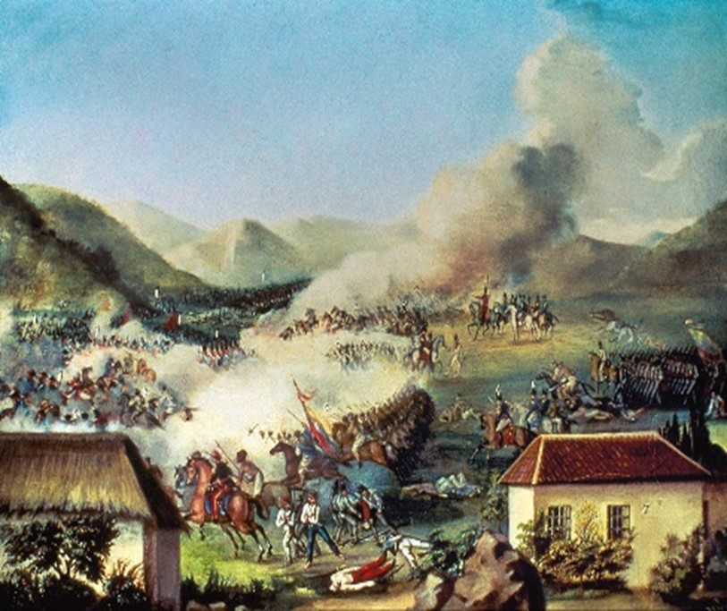
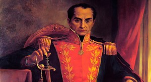
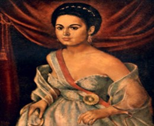

- La Campaña Libertadora: En 1819, Simón Bolívar lideró una ofensiva desde los Llanos de Venezuela hacia el centro de Nueva Granada.
- Situación del virreinato: El virrey Juan de Sámano controlaba Santa Fe con fuerzas debilitadas tras años de conflictos.
- Alianzas criollas: Las provincias comenzaron a unirse contra la dominación española.
Antecedentes

¿Por qué se celebra?
El 7 de agosto de 1819, la Batalla de Boyacá selló la independencia de Colombia, asegurando el control sobre Santa Fe y debilitando al ejército español.
Hechos destacados

- Batalla decisiva: Tuvo lugar cerca del puente de Boyacá. Las tropas patriotas, lideradas por Bolívar, Santander y Anzoátegui, derrotaron a las fuerzas realistas.
- Captura de Barreiro: José María Barreiro, comandante español, fue capturado, lo que desmoralizó a los realistas.
- Entrada a Santa Fe: Bolívar y sus tropas ingresaron triunfantes a Santa Fe el 10 de agosto.
Personajes destacados
- Simón Bolívar: Líder principal de la Campaña Libertadora.
- Francisco de Paula Santander: Estratégico en la organización del ejército.
- José Antonio Anzoátegui: Comandante destacado en la batalla.

Logros posteriores
- Liberación de Santa Fe.
- Consolidación de la independencia de Colombia.
- Fundación de la Gran Colombia (1821), unificando Nueva Granada, Venezuela, Ecuador y Panamá.
Mujeres destacadas

- Manuela Sáenz: Aunque su mayor protagonismo fue después, apoyó a Bolívar como estratega y confidente.
- Mujeres anónimas: Mujeres campesinas apoyaron como espías, mensajeras y proveedoras de alimentos.